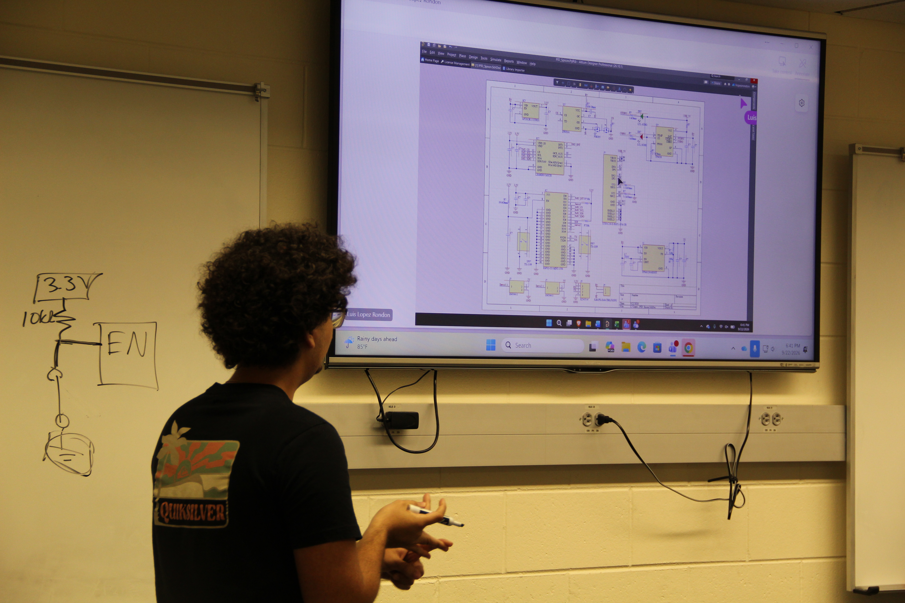
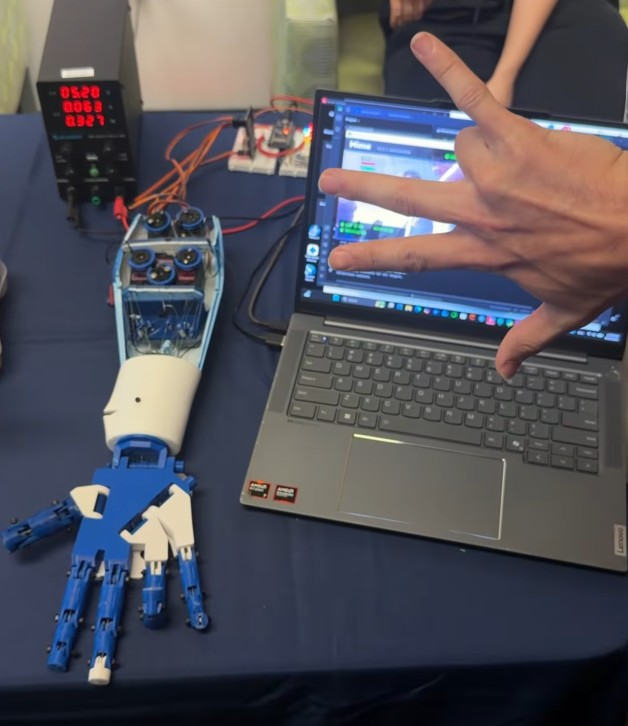
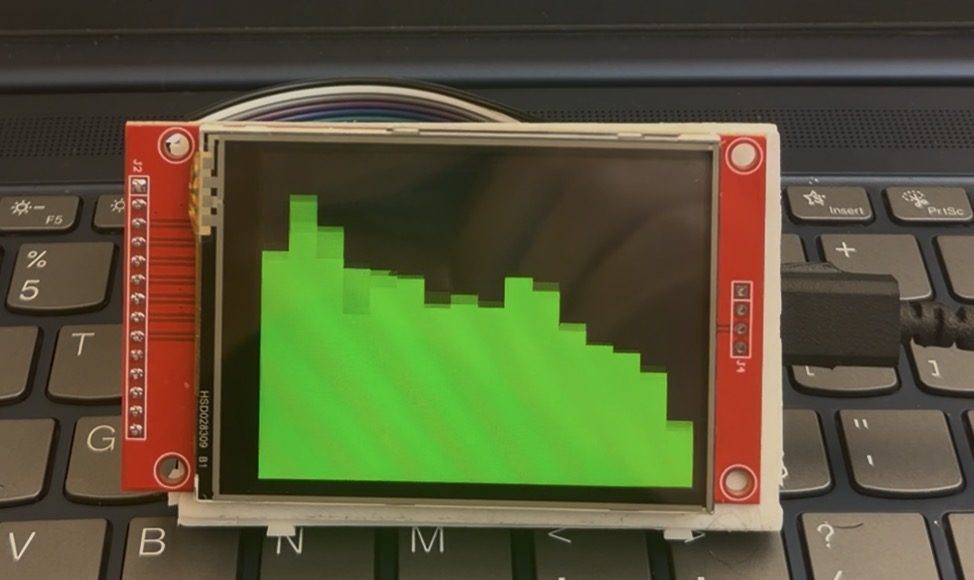

02 / Projects
Selected work
Click a project for more information, design decisions, system diagrams, and build photos.

In progress · EXO main project
EXO Exoskeleton Leg
Leading electrical design for an exoskeleton driven by 48V CubeMars AK80-9 actuators: battery selection, DC-DC power rails, and a hardware e-stop that cuts motor power while keeping control electronics alive.
Read more →
In progress · EXO project
Mimetic Robotic Hand
A five-servo robotic hand that mirrors a human hand in real time, controlled by both a flex-sensor data glove and computer vision.
Read more →
In progress · EXO project
PID Tremor-Stabilizing Spoon
A handheld spoon that counteracts Parkinson's tremors with PID control. Custom PCB with charging and protection. Also the basis for an Altium workshop I ran for IEEE EXO.
Read more →
In progress · Personal project
Audio Spectrum Analyzer
Real-time FFT analysis of USB audio streamed into a Teensy 4.0, visualized on a TFT display.
Read more →